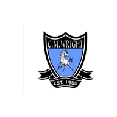

Old Line
Rankings
Every Maryland public high school team, ranked by who they beat and how. Refreshed every night from MPSSAA results.
Games of the week
The best matchups with a live stream, picked by Old Line Rankings.
Class leaders
Football
Fall 2026 · 179 teams · through Oct 10- Quince Orchard4A
- Mergenthaler4A/3A
- Oakdale3A
- Howard2A
- Paul Laurence Dunbar2A/1A
- Fort Hill1A
Boys Soccer
Fall 2026 · 191 teams · through Oct 12- Parkdale4A
- Franklin3A

C. Milton Wright2A- Patterson Mill1A
Girls Soccer
Fall 2026 · 179 teams · through Oct 12- Broadneck4A
- Stephen Decatur3A
- Queen Anne's2A
- Mountain Ridge1A
Basketball
Boys & girls · coming winter 2026–27Lacrosse
Boys & girls · coming spring 2027Why "Old Line"?
Maryland's nickname comes from the Maryland Line, the state's regiments of regular Continental soldiers in the American Revolution. At the Battle of Brooklyn (Long Island) on August 27, 1776, a few hundred Marylanders, remembered as the "Maryland 400," attacked the British again and again so the rest of the American army could escape. Most of them were killed or captured.
Their discipline made the Marylanders known as the "old line" by the end of the war, and over the 1800s the phrase became a nickname for the whole state: the Old Line State. More from the Maryland State Archives →